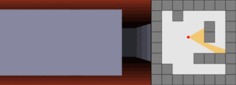
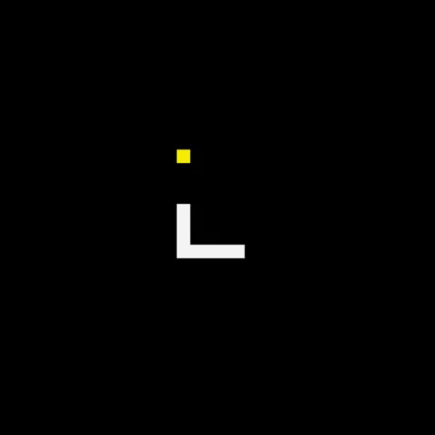
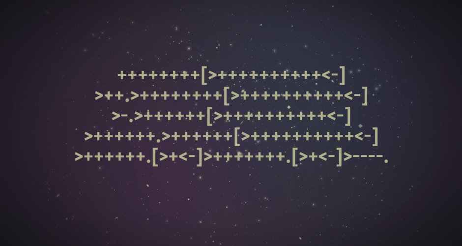

Ray casting is the use of ray–surface intersection tests to solve a variety of problems in computer graphics and computational geometry. The term was first used in computer graphics in a 1982 paper by Scott Roth to describe a method for rendering constructive solid geometry models. Although "ray casting" and "ray tracing" were often used interchangeably in early computer graphics literature, more recent usage tries to distinguish the two. The distinction is that ray casting is a rendering algorithm that never recursively traces secondary rays, whereas other ray tracing-based rendering algorithms may do so.


Snake is the common name for a video game concept where the player maneuvers a line which grows in length, with the line itself being a primary obstacle. The concept originated in the 1976 arcade game Blockade, and the ease of implementing Snake has led to hundreds of versions (some of which have the word snake or worm in the title) for many platforms. After a variant was preloaded on Nokia mobile phones in 1998, there was a resurgence of interest in the snake concept as it found a larger audience. There are over 300 Snake-like games for iOS alone.[2]
Brainfuck is an esoteric programming language created in 1993 by Urban Müller, and notable for its extreme minimalism.
The language consists of only eight simple commands and an instruction pointer. While it is fully Turing complete, it is not intended for practical use, but to challenge and amuse programmers. Brainfuck simply requires one to break commands into microscopic steps.
The language's name is a reference to the slang term brainfuck, which refers to things so complicated or unusual that they exceed the limits of one's understanding.
